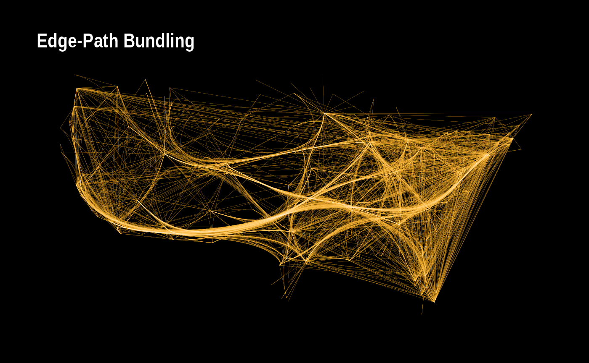

Interactive geospatial processing and visualization with TGVE
Source:vignettes/r-and-js.Rmd
r-and-js.RmdIntroduction
One of the limitations of web browsers is inability to execute general purpose languages like R and Python. On the other hand, the limitation of Python and R (data science languages) is that they need a medium for generating graphics. The increasing number of packages written in JS means data scientists and developers can choose to run some tasks in the browser (clients) and other tasks in R/Python on operating systems, given a client-server architecture (Berson 1996).
The aim of this vignette is to show the way TGVE has been developed and showcase the difference between this approach and other approaches where R is used to generate HTML, CSS and/or JavaScript (JS) code to generate visualizations to run in browsers. Although the front-end application is written in ReactJS, the tgver package bundles a production build of a web application that uses the @tgve/tgvejs npm package.
Dataset one
Let us do some processing in R and then view the result in the TGVE. For this purpose we will use these R packages: edgebundle, igraph and ggplot2 first. The following is adapted from here.
library(igraph)
#>
#> Attaching package: 'igraph'
#> The following objects are masked from 'package:stats':
#>
#> decompose, spectrum
#> The following object is masked from 'package:base':
#>
#> union
library(edgebundle)
library(ggplot2)
library(ggraph)
# this environment variable would return true if run on
# github actions therefore, we can stop running TGVE if so.
# See GitHub docs: https://docs.github.com/en/actions/learn-github-actions/environment-variables
is.actions = Sys.getenv("GITHUB_ACTIONS") != ""
g = us_flights
xy = cbind(V(g)$longitude, V(g)$latitude)
verts = data.frame(x = V(g)$longitude, y = V(g)$latitude)
states = map_data("state")
pbundle = edge_bundle_path(g, xy, max_distortion = 12, weight_fac = 2, segments = 50)
# caching the heavy processing
# saveRDS(pbundle, "vignettes/pbundle.Rds")
# pbundle = readRDS("pbundle.Rds")
# edge list
el = get.edgelist(g)
colnames(el) = c("from", "to")
# get names of airports in verts
verts.with.names = data.frame(x = V(g)$longitude, y = V(g)$latitude, V(g)$name)
colnames(verts.with.names) = c("x", "y", "name")
# intermediate
from = verts.with.names[match(el[,"from"], verts.with.names$name), c("x", "y")]
to = verts.with.names[match(el[,"to"], verts.with.names$name), c("x", "y")]
# create matrix for sf
m = cbind(from, to)
library(sf)
#> Linking to GEOS 3.8.0, GDAL 3.0.4, PROJ 6.3.1; sf_use_s2() is TRUE
sfc = lapply(1:nrow(m), function(x) st_linestring(matrix(unlist(m[x,]), ncol = 2, byrow = TRUE)))
sfc = st_sfc(sfc, crs = 4326)So far, we have done some pre-processing of an igraph object, created some lines, processed the lines using edgebundle::edge_bundle_path (please see the edgebundle package for details of the algorithm), and created an sfcobject.
Static visualization
First, let us have a look at the lines in our sfc object as they are using plot function:
plot(sfc)Secondly, let us have a look at the bundled paths using ggplot:
ggplot() +
geom_path(data = pbundle, aes(x, y, group = group),
col = "orange", size = 0.05) +
geom_path(data = pbundle, aes(x, y, group = group),
col = "white", size = 0.005) +
labs(title = "Edge-Path Bundling") +
ggraph::theme_graph(background = "black") +
theme(plot.title = element_text(color = "white"))
Interactive visualization
Using the TGVE we can embed an instance of the TGVE in the output of a HTML rendered RMarkdown file. Please see the documentations of knitr package for details of embedding HTML.
Let us first view the raw data (no bundling), we can build an instance of the TGVE using tgver::setup. The package relies on passing API variables using a URL to the TGVE instance:
library(tgver)
#>
#> Attaching package: 'tgver'
#> The following object is masked from 'package:utils':
#>
#> help
#> The following object is masked from 'package:base':
#>
#> version
p = getwd() # for reproducibilty this needs to be a persistent location
tp = file.path(p, "tgve")
unlink(tp, recursive = TRUE)
# some random line width
# df = data.frame(lw=runif(length(sfc), min=1, max=5))
run_tgve = function(layerName="line") {
setup(p)
sf = st_as_sf(sfc)
p = explore_sf(sf, static = TRUE, path = tp)
knitr::include_url(file.path(p, "index.html"))
}
img_or_warning = function(img.url) {
if(!curl::has_internet()) {
warning("Rmd was rendered with no connection!")
} else {
paste0("<img src='", img.url, "' />")
}
}
if(!is.actions) {
run_tgve()
} else {
img_or_warning("https://user-images.githubusercontent.com/408568/144712831-7d2aec72-0af4-4ca9-b2e0-2316d7533753.png")
}
#> [1] "<img src='https://user-images.githubusercontent.com/408568/144712831-7d2aec72-0af4-4ca9-b2e0-2316d7533753.png' />"As of version 1.4.0 release of the npm package, the TGVE has a simple filter built in for lines. This is designed to only work with a line layer where clicking on a line would filter out all other lines that are not originating from the source of the line clicked. In future versions, this could be a much richer set of functionalists for filtering “features” such as paths, boundaries etc. Indeed, the column filters built into the TGVE could also be improved and become more sophisticated.
 The TGVE basic “click to filter” of lines from an origin-destination data.
The TGVE basic “click to filter” of lines from an origin-destination data.
Notice, that as the package is hosted on GitHub and rely on actions to run the package checks, we have checks to decide whether this Rmd renders the TGVE instance on your local machine or not. If you are reading this Rmd on GitHub, chances are you cannot see the TGVE instance. You may have to open the output of the rendered Rmd on a browser tab to see the TGVE instances.
Let us see how the bundled data looks on the TGVE, we need to use the path layer for now, as the TGVE can still do with more advanced layer detection in future:
# convert the pbundle into sf
sfc = lapply(1:length(unique(pbundle$group)), function(x) st_linestring(matrix(unlist(pbundle[pbundle$group == x, 1:2]), ncol = 2)))
sfc = st_sfc(sfc, crs = 4326)
# plot(sfc)
p = file.path(p, "edge-tgve")
tp = file.path(p, "tgve")
unlink(tp, recursive = TRUE)
if(!is.actions) {
run_tgve(layerName = "path")
} else {
img_or_warning("https://user-images.githubusercontent.com/408568/144713110-245cf94e-826d-4525-bc48-ac7c97220c71.png")
}
#> [1] "<img src='https://user-images.githubusercontent.com/408568/144713110-245cf94e-826d-4525-bc48-ac7c97220c71.png' />"Notice again, if you are reading this vignette on GitHub, you will not see the interactive result but a screenshot of the final result. Also, if you like to clean up after running this Rmarkdown document, then:
Dataset two
The CDRC (Consumer Data Research Centre) provides “unique insight in to a diverse range of societal and economic challenges in collaboration with a wide range of consumer data providers”(CDRC 2021). On the website researchers can find consumer datasets. One of these is IMD historical data for UK’s Lower Super Output Areas (LSOA). The LSOA geography is a “large” boundary data and you can find out more about it and download different datasets here or elsewhere.
A typical scenario for a researcher, including senior data scientists is to learn about how geographic data is processed in data science languages such as R and Python. Let us imagine our researcher is an R expert but has not been exposed to geographic data. They need to first learn about OGC standards such as Simple Features. They will then need to learn about packages like sf and underlying system requirements without mentioning examples.
What the TGVE does for our researcher in question is, whilst they are learning about these data structures and how they are processed in R, they can start exploring them using the TGVE. Provided they can find the right geography for the dataset in question, and having made sure that there is a matching geography column name between the dataset and the geography data file, the TGVE can combine the two.
We needs to download an IMD dataset such as this one. They would then need to be aware that this is only greater London with some ~5k LSOA areas. Once they can filter the large LSOA file from source down to those in the CSV file as follows:
dir = file.path(tempdir(), "cdrc")
dir.create(dir)
# download the csv data which is behind authorization from cdrc
# https://data.cdrc.ac.uk/system/files/c1_english_imd_2019_rebased_for_london.csv
# via https://data.cdrc.ac.uk/dataset/index-multiple-deprivation-imd
# renamed data.csv
csv = read.csv(file.path(dir, "data.csv"))
# download the geography (a .geojson file for our purposes using sf)
# from here https://github.com/gausie/LSOA-2011-GeoJSON
library(sf)
geo = st_read("https://raw.githubusercontent.com/gausie/LSOA-2011-GeoJSON/master/lsoa.geojson")
# filter it to those in the CSV file
m = match(csv$ls11cd, geo$LSOA11CD)
# notice the different column names for the same geography codes
geo = geo[m, ]
# rename column as TGVE package is young
colnames(geo)[1] = "ls11cd" # same as column one in CSV
# make sure both files are in the ~/Downloads/cdrc directory
# named lsoa.geojson
st_write(geo, file.path(dir, "lsoa.geojson"))
# Finally, let TGVE serve it!
tgver::explore_dir(dir)Now, the package (tgver) has a function called explore_dir which searches through at a directory for two files: a CSV and a GeoJSON file. It reads them, generates the API using the plumber package behind the scenes and serves them to the front TGVE which puts them together.
The result will be like the following image. 
Remote TGVE instance
The TGVE accepts data source URLs to be passed as URL parameters. This means, data scientists can do their processing in R, once they have uploaded (or are able to serve locally) data, they can pass such sources to the TGVE.
Check the following instance being customized with data served from a GitHub repository:
knitr::include_url(
paste0("https://tgve.github.io/app/?",
"defaultURL=https://raw.githubusercontent.com",
"/tgve/example-data/main/casualties_100.geojson&layerName=heatmap")
)We can, of course, pass the data (bundled or not) as a json (geojson) using the data variable of the TGVE. This is how you could do this in this code sample:
# same URL as the instance above
knitr::include_url(
paste0(
# use the 1data1 parameter
"https://tgve.github.io/app?data=",
gj # see above
)
)Conclusion
The TGVE is built with a vision that R should do what R does best and so should JS/browser. Their power lies in what they do best and in their own environments. At this early releases of the front-end (npm package) the TGVE can be used embedded in the tgver package or as a remote instance. The aim is to bring R + JS together using their latest releases and libraries to carry out scalable geospatial data processing and visualization.
References
Berson, Alex. 1996. Client/Server Architecture. McGraw-Hill, Inc.
CDRC. 2021. “Consumer Data Research Center.” https://www.cdrc.ac.uk/.